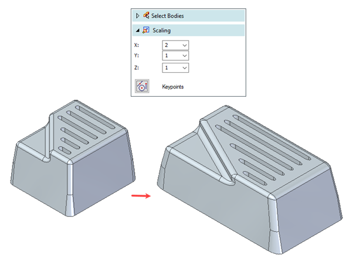

Scale Body command
The Scale Body command is located on the Home tab→Solids group→Add Body list→Scale Body.
Use the Scale Body command (boolean) to change the physical size of a body or several bodies within a part document. The need to change the size of a body is common in applications such as manufacturing molded plastic parts, where the size of the mold cavity is larger than the resultant part because the plastic shrinks as it cools.
The Scale Body command supports both uniform scaling, where the scale factor is applied equally in all directions, and non-uniform scaling, where scale factors can be applied individually to the X, Y and Z directions. The scaling occurs about the base coordinate system unless a keypoint is selected.

Watch the following video to see how to change the physical size of body using the Scale Body command.
How do I
Union selected bodiesSubtract a volume from a body
Intersect selected bodies into a single body
Split a selected body into individual bodies
Learn more
Boolean commandsLook up more details
Union command (boolean)Union command bar
Subtract command (boolean)
Subtract command bar
Assembly Subtract Options dialog box
Intersect command (boolean)
Intersect command bar
Scale Body command bar
Scale Body Options dialog box
Split command (boolean)
Split command bar
Boolean Options dialog box